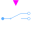
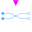
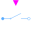

IdealIdeal components for AC polyphase models |
|
Package Contents
|
Idle branch |
|
|
Short cut branch |
|
|  |
Polyphase ideal commuting switch |
|  |
Polyphase ideal intermediate switch |
|
Polyphase ideal opener |
|
|  |
Polyphase ideal closer |
Information
This information is part of the Modelica Standard Library maintained by the Modelica Association.
This package hosts ideal models for quasi-static polyphase circuits. Quasi-static theory can be found in the references.